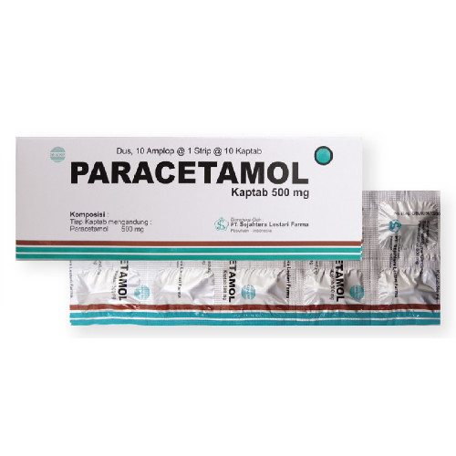

FLU
Influenza berasal dari Italia : Influenza, yang berarti “mempengaruhi” (Latin ; influentia). Influenza/flu adalah salah satu penyakit saluran napas yang paling sering terjadi. Virus influenza dapat dengan mudah menyebar dari satu orang ke orang lain. Virus ini beredar diseluruh dunia dan dapat mempengaruhi orang tanpa memandang usia dan jenis kelamin. Pada negara – negara dengan 4 musim, flu dapat terjadi pada musim dingin, sedangkan di negara khatulistiwa seperti Indonesia, influenza dapat terjadi sepanjang tahun. Influenza dapat ditularkan melalui kontak langsung maupun tidak langsung. Kontak langsung dapat terjadi apabila cipratan ludah dari sang penderita yang mengandung virus ditularkan ke orang lain saat penderita batuk, bersin dan batuk batuk bisa menular ke orang lain dengan jarak 5 meter. Virus influenza terdiri atas 3 jenis, yaitu influenza A, influenza B dan influenza C yang ketiganya termasuk famili virus Orthomyxoviridae.
- - Influenza A : Dalam genus ini hanya ada satu spesies, yaitu influenza A. Virus influenzaA dapat menginfeksi manusia, mamalia, dan burung. Ada beberapa serotipe influenzaA yang dibedakan melalui antigen H (hemaglutinin) dan antigen A (neuraminidase) yang terdapat pada virus. Virus H5N1 artinya memiliki antigen H tipe 5 dan antigen 1 tipe antigen N.
- - Influenza B : Dalam genus ini hanya ada satu jenis spesies, yaitu influenza B. tidak seperti influenzaA, influenza B diketahui hanya menginfeksi manusia. Influenza B bermutasi lebih lambat dari influenza A, dan sampai saat ini diketahui hanya ada 2 tipe influenza B, yaitu B/Yamagata/16/88 dan B/Victoria/2/87.
- - Influenza C : Dalam genus ini hanya ada satu spesies, yaitu influenza C. Influenza C diketahui menginfeksi manusia dan babi. Episode influenza akibat infeksi virus influenza C relatif jarang dibandingkan dengan influenzaA dan influenza B.
- Gejala : gejala flu dapat ditandai dengan terjadinya demam, sakit kepala, batuk, hidung tersumbat, bersin – bersin, sakit tenggorokan, sakit perut, mual dan muntah, hingga diare
- Penyebab : Influenza biasa disebut flu, merupakan penyakit menular yang disebabkan oleh virus RNA dari keluarga Orthomyxoviridae yang dapat menyerang burung, mamalia termasuk manusia. Virus ditularkan melalui air liur terinfeksi yang keluar pada satt penderita batuk, bersin atau melalui air liur terinfeksi yang keluar pada saat penderita batuk, bersin atau sekresi melalui kontak langsung dengan sekresi (ludah, air liur, ingus) penderita.
- Pengobatan Konvensional : Sebagian besar kasus influenza dapat sembuh dengan sendirinya. Penderita akan dianjurkan untuk istirahat yang cukup dan konsumsi makanan bergizi untuk meningkatkan imunitas. Untuk influenza A dan B dapat menggunakan obat antivirus seperti oseltamivir dan zanamivir namun harus sesuai dengan rekomdasi atau resep dari dokter. Mengobati sesuai gejala, seperti OAINS untuk peradangan, obat flu untuk produksi lendir hidung, dan obat antitusif untuk gejala batuk.
-
Pengobatan Konvensional
Paracetamol (Analgetic/Antipiretik )
- Kandungan : Paracetamol 500 mg
- Dosis : Dewasa: 1-2 kaplet, 3-4 kali per hari. Penggunaan maximum 8 kaplet per hari. Anak 7-12 tahun : 0.5 - 1 kaplet, 3-4 kali per hari. Penggunaan maximum 4 kaplet per hari.
- Indikasi : Obat ini digunakan untuk meredakan nyeri ringan hingga sedang seperti sakit kepala, sakit gigi, nyeri otot, serta menurunkan demam.
- Kontraindikasi : Parasetamol jangan diberikan kepada penderita hipersensitif/alergi terhadap Paracetamol. Penderita gangguan fungsi hati berat.
- ESO : Penggunaan untuk jangka waktu lama dan dosis besar dapat menyebabkan kerusakan fungsi hati. - Reaksi hipersensitifitas/ alergi.

Asam Mefenamat, Ibuprofen (OAINS)
- Kandungan : Asam Mefenamat 500 mg
- Dosis : Dewasa dan anak >14 tahun : 3 x sehari 500 mg. Lansia : Mulailah dengan dosis yang lebih rendah dan durasi sesingkat mungkin.
- Indikasi : Meredakan nyeri ringan hingga sedang pada sakit kepala, sakit gigi, nyeri haid primer, termasuk nyeri karena trauma, nyeri otot
- Kontraindikasi : Hipersensitivitas. Pasien dengan aktif atau riwayat tukak/perdarahan peptikum berulang, riwayat perdarahan gastrointestinal atau perforasi (terkait dengan terapi NSAID sebelumnya), penyakit radang usus, gagal jantung berat, riwayat asma, bronkospasme, rinitis, angioedema, urtikaria, atau tipe alergi reaksi setelah minum aspirin atau NSAID lainnya. Pengobatan nyeri peri-operatif dalam pengaturan operasi CABG. Ginjal (kurang dari CrCl 30 mL/menit) dan gangguan hati berat. Kehamilan (trimester ketiga).
- ESO : Efek signifikan yakni Reaksi anafilaktoid, retensi cairan, anemia, hiperkalemia. Gangguan sistem darah dan limfatik: Eosinofilia, leukopenia, trombositopenia, purpura, agranulositosis. Gangguan jantung: Dispnea. Gangguan telinga dan labirin: Tinnitus. Gangguan gastrointestinal: Diare, mual, muntah, sakit perut, perut kembung, sembelit, dispepsia, mulas, gastritis.
.jpg)
Antitusif Ekspektoran, atau Mukolitik
- Kandungan : Guaifenesin 150 mg, Dextromethorphan HBr 10 mg, Diphenhydramine HCl 15 mg
- Dosis : Dewasa dan anak diatas usia 12 tahun: 3-4 x sehari 1 tablet. Anak usia 6-12 tahun: 3-4 x sehari 0.25-0.5 tablet.
- Indikasi : Meringankan batuk dan flu yg disertai alergi.
- Kontraindikasi : Hipertiroid, hipertensi, penyakit jantung koroner, sedang mendapat terapi MAOI, nefropati
- ESO : Mengantuk, pusing, mulut kering, ruam kulit.

Dekongestan : Pseudoephedrine
- Kandungan : Pseudoephedrine HCl 60 mg, Triprolidine HCl 2.5 mg
- Dosis : Dewasa dan anak >12 tahun: 1 tablet, 3-4 kali sehari. Anak 6 - 12 tahun : 1/2 tablet, 3-4 kali sehari.
- Indikasi : Obat ini digunakan untuk meringankan gejala-gejala pilek, flu.
- Kontraindikasi : Penyakit saluran pernapasan bawah, termasuk asma, hipertensi, glaukoma, diabetes, CAD, terapi MAOI.
- ESO : Mulut, hidung, dan tenggorokan kering. Mengantuk, pusing, gangguan koordinasi, tremor, insomnia, halusinasi, tinitus
-
Pengobatan Herbal

Herbal Teh Hijau (Green Tea) dan Teh Hitam (black Tea)
- Mengkonsumsi teh hangat baik itu teh hijau, teh hitam atau chamomile tea dapat meredakan gejala hidung tersumbat atau kongesti yang sangat menganggu dari flu. Hal ini karena kandungan theophylline pada daun teh yang diseduh akan membuka saluran nafas dan memudahkan proses bernafas.
- Jenis teh chamomile merupakan jenis teh yang paling efektif dibanding jenis teh yang lainnya dalam meredakan gejala flu dan dianjurkan untuk mengkonsumsi 5 cangkir teh hangat tiap hari.